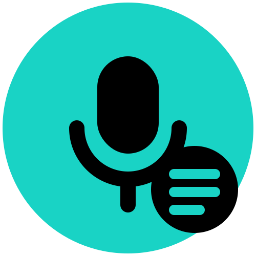
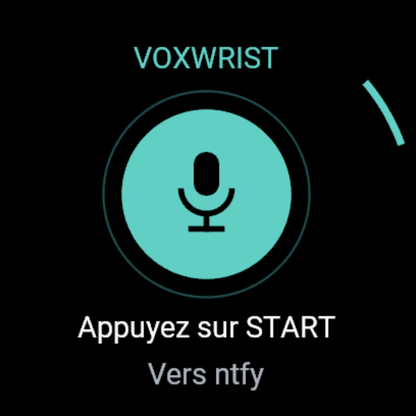
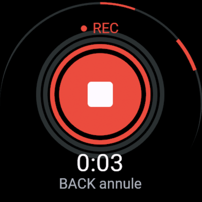
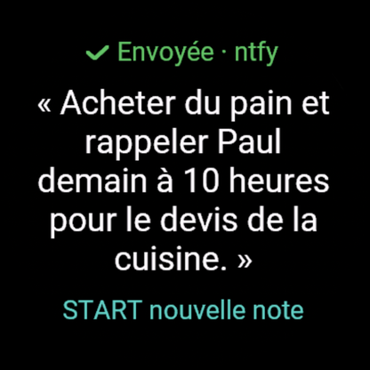

Voxwrist Notes
Votre voix, depuis votre montre Garmin. Deux appuis, sans clavier. Gratuit.



Comment ça marche
- Appuyez sur START, parlez (jusqu'à 2 minutes), appuyez sur START.
- La note est transcrite par OpenAI avec votre propre clé API (vous payez OpenAI directement, quelques centimes par heure d'audio).
- Le texte s'affiche sur la montre et part, si vous le voulez, vers une notification téléphone (ntfy), Todoist ou un webhook (Notion, Zapier, Make, n8n, e-mail via Zapier…).
Installation
- Installez Voxwrist Notes depuis le Connect IQ Store.
- Créez une clé sur platform.openai.com.
- Appli Garmin Connect › votre montre › Applis Connect IQ › Voxwrist Notes › Réglages : collez la clé, et éventuellement un sujet ntfy, un jeton Todoist ou une URL de webhook. Rien à taper sur la montre, aucun serveur à installer.
Hors connexion, la note est gardée sur la montre (5 max) et part toute seule au retour du téléphone.
Compatibilité : montres Garmin avec micro (Connect IQ 6.0.3+) : fēnix 8 / 8 Pro / 9, Forerunner 570 / 970, Venu 4 / X1, MARQ 3, D2 Mach 2, Approach S72.
Confidentialité — ni l'audio, ni le texte, ni votre clé ne sont conservés.
English
Voxwrist Notes is a free voice-notes app for Garmin watches with a microphone: press START, speak, press START. Audio is transcribed by OpenAI using your own API key (set once in the Garmin Connect app, never typed on the watch). The text is shown on the watch and can be sent to a phone notification (ntfy), Todoist or any https webhook (Notion, Zapier, Make, n8n — e-mail through Zapier/Make). No account, no server to install. Audio, text and keys are never stored. Privacy policy.